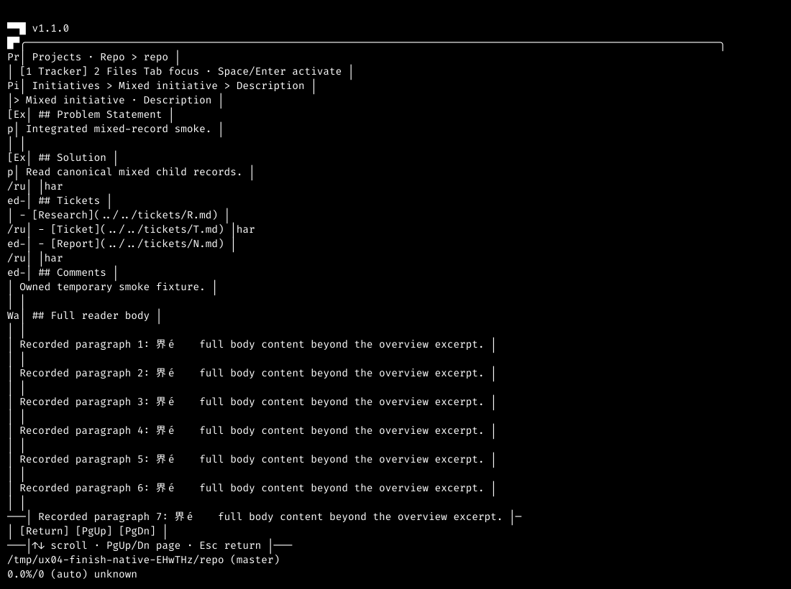
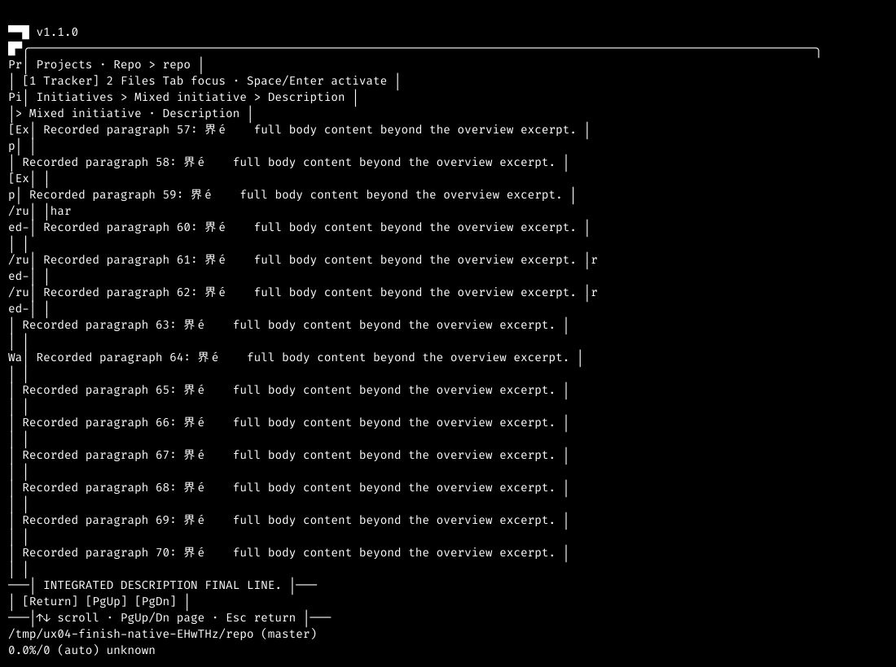
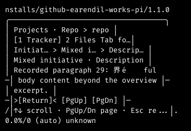
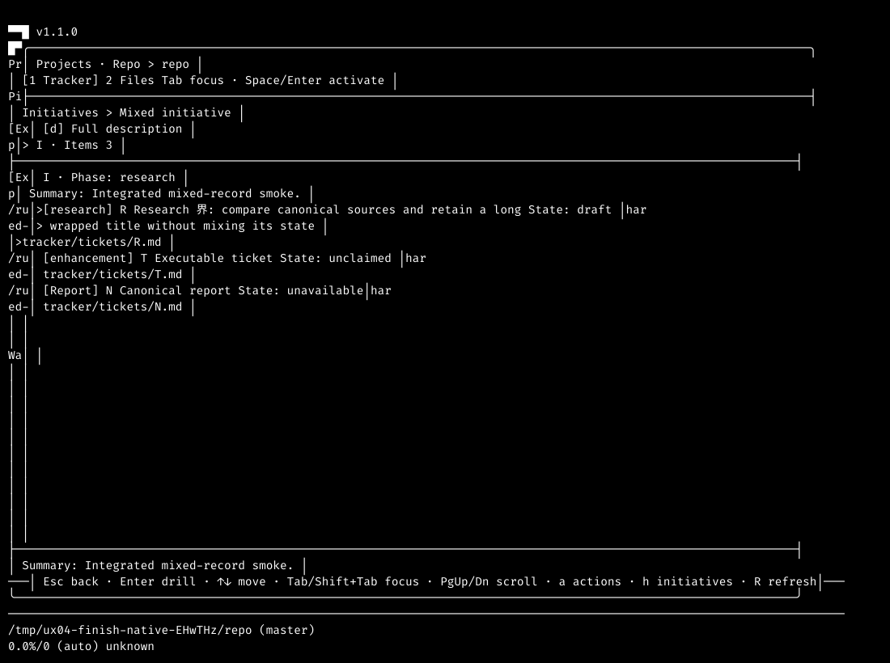

Actual Pi loaded the integrated primary-workspace extension. The reader opened the full initiative body, reached its final line, retained compact return controls, and restored the selected child.
28 October 2026 · Pi 1.1.0 · Termscope · dark theme · isolated temporary records.
This is a focused post-integration smoke. It does not replace the independent exact-source reviews.
Source and method
Reviewed source 946996c7bef540090de2c500e573cae3543b84f4 mapped to integration 2c653468027cfb0bfd099b7d12ce85c4e4db8c75. The integrated tree matched the prepared merge tree, with the recorded base as its sole parent.
The production extension loaded from the surviving primary checkout. The fixture contained a versioned initiative with three direct children and a long recorded body. Page Down reached the final sentinel. After resizing, Tab visibly focused Return; Enter restored the original initiative and selected research child.
The affected suite passed 144 tests and 1975 assertions across 11 files. The scoped TypeScript check exited 0. Commands and output travel in integrated-checks.json.
1 — Full recorded body Pass

Beyond the summary. The reader showed the recorded sections, child links as text, and the body paragraphs under a persistent initiative heading.
2 — Final recorded line Pass

Complete body reached. Page Down exposed “INTEGRATED DESCRIPTION FINAL LINE.” The reader did not stop at the overview excerpt.
3 — Compact return control Pass

Usable return path. At 40×12, the heading and body remained reachable. The greater-than and less-than markers identified the focused Return control without relying on colour.
4 — Origin restored Pass

Same canonical child. Enter on Return restored the initiative overview with research record R still selected. The reader did not reset the child selection.
Not covered
This fresh smoke used the dark theme at 120×40 and 40×12. It did not repeat the complete colour/monochrome matrix. The implementation and independent reviews retain that separate evidence.
PNG captures were rasterized from native Termscope SVG. Fallback fonts omit or alter some complex Unicode glyphs. These images prove the stated controls and navigation, not colour or Unicode glyph conformance. Native JSON and HTML remain in the original evidence directory.
Live replacement, empty/unreadable recovery, project isolation and event restoration were not repeated manually here. They remain covered by the passing affected suite and exact-source review evidence.
No provider prompt, workflow action or live user record was dispatched or changed. Offline startup notices and the existing shortcut conflict were not changed.
Test data left behind
The native process exited 0. The owned temporary repository and isolated configuration were removed. All nine parent-created dependency links were removed after ownership checks. No cleanup command remains for the fixture.
Related files
These copies travel with the report. Their original paths describe the environment used for verification.